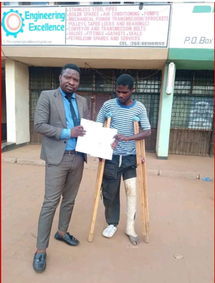
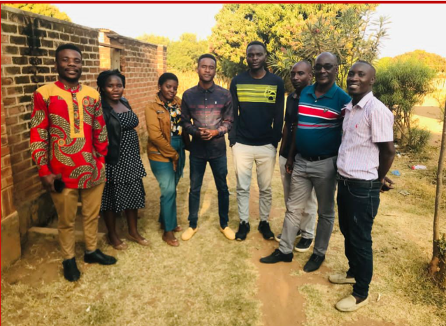
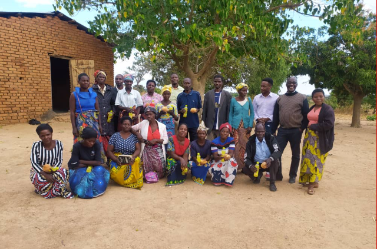

Providing good governance with respect to transparency,accountability and democracy among duty bearers and rights holders



VISION
To have a healthy society where every community enjoys equal rights,
quality healthcare and sustanaible development
MISSION
To promote human rights and improve community health by providing advocacy,
legal support, health services, capacity building and empowerment programs
in partnership with communities and stakeholders across Malawi.
Legal services offered
Comprehensive legal aid across multiple practical areas, all provided with expertise and compassion
Human rights advocacy and legal support
We advocate for the protection and promotion of human rights by providing legal awareness, advisory services, and support to individuals and communities to ensure access to justice and equitable treatment
Community health services
We deliver accessible community-based health services focused on eye care, prevention, early detection, and referral, improving overall health outcomes at the grassroots level.
Capacity building and training
We strengthen the skills and knowledge of community members, health workers, and local institutions through targeted training programs that promote sustainability and self-reliance.
Research and policy engangement
We conduct research and actively engage with policymakers to generate evidence-based insights that inform policies, influence decision-making, and improve health and human rights systems.
Community development and empowerment
We support inclusive community development initiatives that empower individuals and groups to actively participate in social, economic, and health-related decision-making processes.
Collaboration and networking
We collaborate with government institutions, civil society organizations, and development partners to leverage resources, share expertise, and maximize collective impact.
WHO WE ARE
Community Eye organization is a local organization registered in Malawi which was established in 2000 to support Malawian Non state Actors to engage in governance interventions. The
Community Eye organization work is within the Malawi government development policy frameworks such as Malawi Growth and Development Strategy III and the Malawi Agenda 2063.It is also
guided by global frameworks such as the Sustainable Development Goals(SDGs), the African Union Agenda 2063, and the Paris Declaration. We support Non state Actors(NSA) to play a role in the
consolidation and upscaling of good governance in Malawi. Our belief is that increased capacity of Non state Actors and promoting levels of citizens' engagement in democratic governenace
is impoRtant to catalyze increased accountatbility, responsiveness and inclusitivity of the state and other service providers
WHAT WE DO
promote accountable, responsive and inclusive governance
ensuring that institutions are compliant with regulations
work to strengthen capacity of citizens and CSOs
engagementof citizens and CSOs with duty bearers, service providers and decsion makers to demand their rights and exercise their responsibilities
OUR STRATEGIC PLAN
Promoting accounatble, responsive and inclusive governance; strengthen the organizational capacity and establish and strengthen partnerships and networks. The strategic plan has the following programmatic result areas: